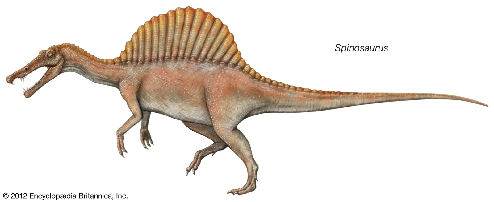

Spinosaurus
Quái vật gây tranh cãi nhất lịch sử
Giới
Animalia
Ngành
Chordata
Lớp
Reptilia
Nhánh
Dinosauria
Bộ
Saurischia
Họ
Spinosauridae
Chi
Spinosaurus
Spinosaurus là một chi khủng long spinosaurid sống ở khu vực nay là Bắc Phi vào khoảng niên đại Cenoman đến thượng Turon cuối kỷ Phấn trắng, khoảng 99 đến 93,5 triệu năm trước.
Nguồn: wikipedia.org

Thông tin thêm về Spinosaurus
Tổng quan
Spinosaurus
Tên của loài khủng long này có ý nghĩa là "Thằn lằn khổng lồ có gai" vì nó có một dãy gai dọc theo lưng, nó được đặt theo họ nhà Spinosauridae.
Kích thước
Lớn: cao khoảng 5.4 m, dài khoảng 15-18 mét và nặng khoảng 7-20 tấn.
Spinosaurus là một trong những con khủng long lớn nhất sống trong kỷ Phấn Trắng muộn được biết đến.

Kỷ nguyên
Trong kỷ Phấn Trắng (Cretaceous)
Spinosaurus là một loài khủng long sống cách đây khoảng 112-93 triệu năm trước.

Sự tuyệt chủng
Spinosaurus cũng chịu chung số phận diệt chủng như những loài khủng long khác trong sự kiện kỉ Phấn Trắng. Nếu dựa theo những số liệu dựa trên những mẫu hóa thạch thì loài khủng long này có thể xuất hiện sau những loài khủng long thời kì đầu một vài triệu năm.
Phân bố
Khu vực Bắc Phi
Môi trường sống của nó có thể là những khu rừng ngập mặn cổ đại. Đây là loài khủng long trên cạn đầu tiên có thể thích nghi cả với cuộc sống trên cạn lẫn dưới nước.
Khám phá:
Hóa thạch của Spinosaurus lần đầu tiên được phát hiện tại Ai Cập vào năm 1912 và được nhà cổ sinh vật học người Đức Ernst Stromer mô tả khoa học vào năm 1915. Mẫu vật gốc này bị phá hủy trong Thế chiến thứ hai, song các nhà cổ sinh đã phát hiện thêm nhiều mẫu vật vào đầu thế kỷ 21. Chi này bao gồm hai loài chính thống: loài nổi tiếng nhất là S. aegyptiacus từ Ai Cập và loài thứ hai là S. maroccanus từ Maroc (có tranh luận cho rằng hai loài này là một).

Đặc điểm
Chế độ ăn và săn mồi
Vào năm 1983, các nhà khoa học đã tìm thấy 1 bộ xương hoàn chỉnh của khủng long Spinosaurus tại nước Anh với vảy và răng cá trong dạ dày, cùng với 1 bộ xương của 1 con khủng long Iguanodon (1 loài khủng long ăn thực vật cỡ nhỏ). Vì thế, người ta đã biết rằng khủng long Spinosaurus không phải loại kén cá chọn canh như các loài khác. Chúng thích ăn cá và săn cả những loài ăn thực vật đến uống nước bên bờ sông.

Ngoại hình
Spinosaurus giống cá sấu vì có hộp sọ dài. Lỗ mũi của mõm nó được tìm thấy gần mắt hơn là ở cuối. Spinosaurus có thân hình đồ sộ với các gai thần kinh tạo thành hình giống như cánh buồm trên lưng.

Ngoài ra, cơ thể của Spinosaurus có đuôi hình mái chèo và bốn chi. Spinosaurus có hàm răng sắc nhọn, chi trước của chúng được trang bị bộ móng vuốt cong và sắc như dao, điều đó biến việc săn mồi của chúng trở nên dễ dàng hơn. Phần lớn cộng đồng khoa học chấp nhận Spinosaurus là loài khủng long di chuyển bằng hai chân (hai chi). Nhưng những người khác đề xuất rằng nó có thể đã đôi khi sử dụng cả bốn chi để đi lại. Chúng cũng có thể bơi và sống gần các vùng nước ngọt và mặn.